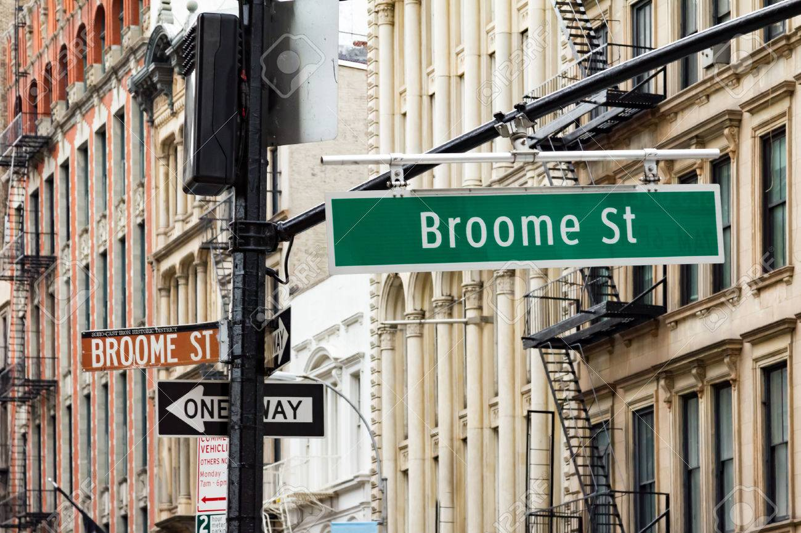
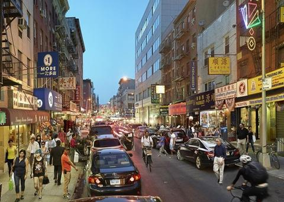
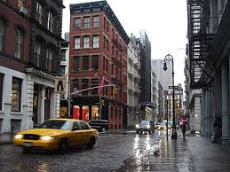
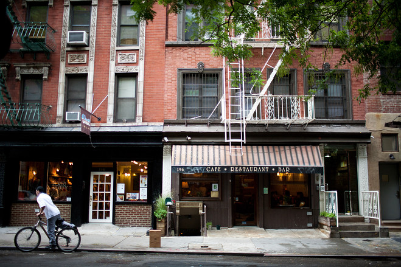
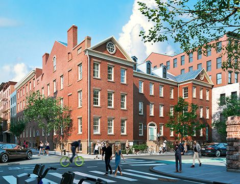
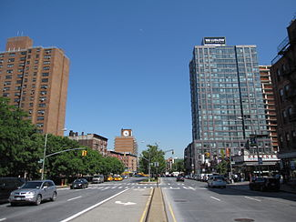

sometimes written as NoLIta, and deriving from "North of Little Italy"[1][2][3] is a neighborhood in the borough of Manhattan in New York City. Nolita is bounded on the north by Houston Street, on the east by the Bowery, on the south roughly by Street, and on the west by Lafayette Street. It lies east of SoHo, south of NoHo, west of the Lower East Side, and north of Little Italy and Chinatown. History and descriptionThe neighborhood was long regarded as part of Little Italy, but has lost its recognizable Italian character in recent decades because of rapidly rising rents.[1] Most of the longtime residents despise the portmanteau that was forced on the neighborhood by the real estate conglomerates and the media. Many elderly descendants of Italian immigrants continue to be pushed out of the neighborhood by greedy landlords that circumvent the rent control laws . Moreover, the Feast of San Gennaro, dedicated to Saint Januarius ("pope of Naples"), is held in the neighborhood every year following Labor Day, on Street between Houston and Street .[5] Historically most of the vendors that participated in the "Feast" lived in the neighborhood, but over the past 10 years have been replaced by mid-west style carnival touts. The feast, as recreated on Street between and , was featured in the film The Godfather Part II. In the second half of the 1990s, the neighborhood saw an influx of yuppies and an explosion of expensive retail boutiques and trendy restaurants and bars. After previous unsuccessful tries to pitch the neighborhood as part of SoHo, real estate promoters and others came up with several different names for consideration of this newly upscale neighborhood. The name that stuck, as documented in an article on May 5, 1996 in the New York Times City Section debating various monikers for the newly trendy area, was Nolita, an abbreviation for North of Little Italy. This name follows the portmanteau pattern started by SoHo (South of Houston Street), and TriBeCa (Triangle Below Canal Street). The neighborhood includes St. Patrick's Old Cathedral, at the intersection of Mulberry, Mott and Prince Streets, which opened in 1815 and was rebuilt in 1868 after a fire.[6] The cornerstone was laid on June 8, 1809. This building served as New York City's Roman Catholic cathedral until the new St. Patrick's Cathedral was opened on Fifth Avenue in Midtown in 1879.[7] St. Patrick's Old Cathedral is now a parish church. In 2010, St. Patrick's Old Cathedral was honored and became The Basilica at St. Patrick's Old Cathedral. Another neighborhood landmark is the Puck Building, an ornate structure built in 1885 on the corner of Houston and Lafayette Street , which originally housed the headquarters of the now-defunct Puck Magazine.